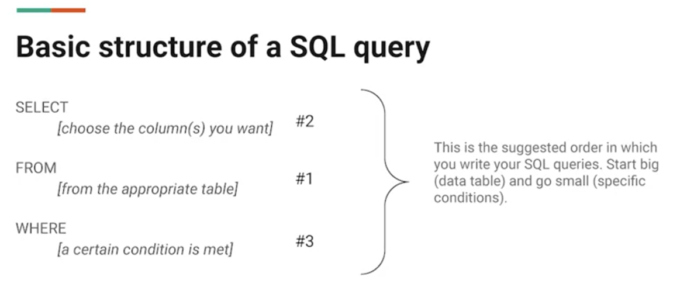
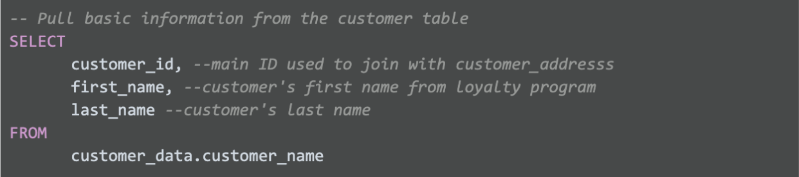
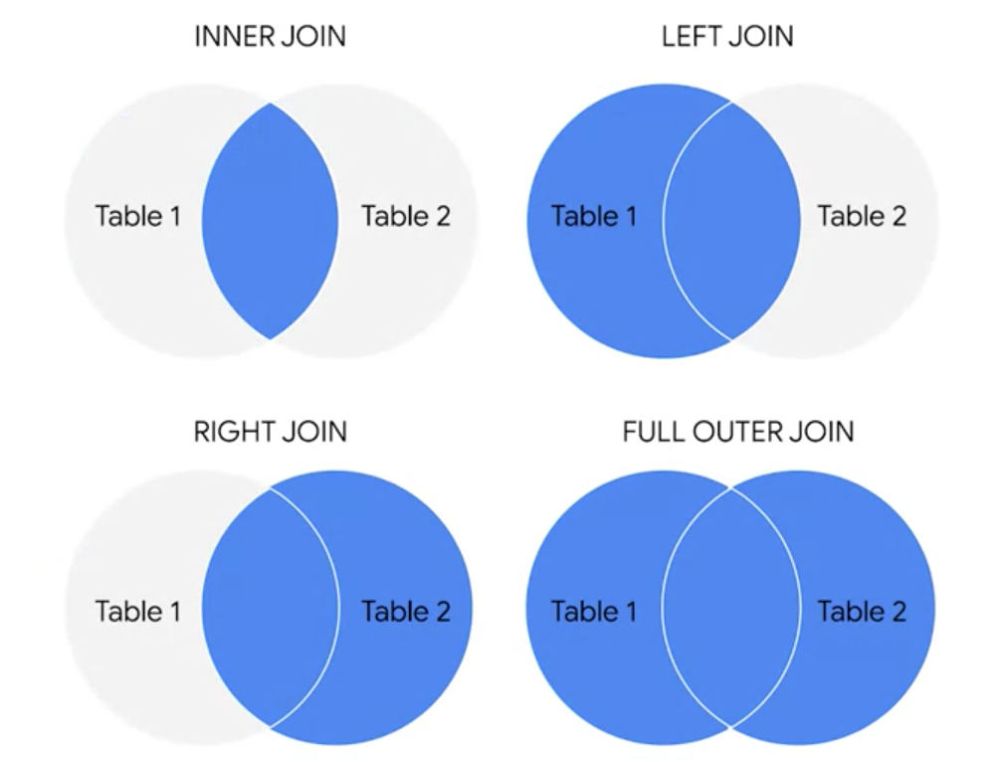

Chapter - 11 SQL
The following chapter includes the notes regarding SQL from the Google Data Analytics Course.
11.1 Introduction
A query language is a computer programming language that allows you to retrieve and manipulate data from a database.
SQL = Structured Query Language
A database is a collection of structured data stored in a computer system. Some popular Structured Query Language (SQL) programs include MySQL, Microsoft SQL Server, and BigQuery.
Query languages
Allow analysts to isolate specific information from a database(s)
Make it easier for you to learn and understand the requests made to databases
Allow analysts to select, create, add, or download data from a database for analysis
A query is a request for data or information from a database.

Basic call:
11.2 SELECT FROM WHERE
SELECT first_name
FROM move_data.movies
WHERE Genre__1 = ‘Action’
SELECT * means select ALL columns
Selecting multiple columns:
SELECT
ColumnA,
ColumnB,
ColumnC
FROM move_data.movies
WHERE Genre__1 = ‘Action’
Multiple filters
SELECT *
FROM
move_data.movies
WHERE
Condition 1
AND Condition 2
Or either filter:
WHERE
Condition 1
OR Condition 2
Basic WHERE clause:
| Function | Meaning |
|---|---|
| WHERE name = “Dave” | Exact |
| WHERE NOT name = “Dave” | All but DaveDave |
| WHERE name LIKE “D%” | Starting with (sometimes D*) |
| WHERE name NOT LIKE “D%” | Does not start with |
| WHERE name LIKE “[abc]” | Starting with multiple options |
| WHERE name LIKE “[!abc]” | Not starting with multiple options |
| WHERE name LIKE “%e” | Ending with e |
WHERE name LIKE ‘_a%’ |
Second letter is _ |
WHERE name <> ‘Dave’ or WHERE name != ‘Dave’ |
Exclude |
| WHERE salary <= 3000 | Less than or equal to |
| WHERE salary >= 3000 | Greater than or equal to |
| WHERE salary < 3000 | Less than |
| WHERE salary > 3000 | Greater than |
| WHERE SUBJECT NOT NULL | returns values with no missing values |
| WHERE SUBJECT IS NULL | returns values with missing values |
It is additionally possible to add comments for further reference:
column1
/*
Here I am explain what the data means
*/
or
column1 - - the column of the first name
Example:

Aliases = new name
column1 AS last_name - - alias for understanding the column
table AS customers - - to rename the table
These aliases are good for the duration of the query only. An alias doesn’t change the actual name of a column or table in the database.
Group By
Helps calculate summary values by the chosen column. It is often used
with aggregate functions (COUNT, SUM, AVG, MAX, MIN)
SELECT
SUBJECT,
AVG(GRADES)
FROM
STUDENTS
GROUP BY
SUBJECT
The query above will group each subject and calculate the average grades.
SELECT SUBJECT, AVG(GRADES)
FROM STUDENTS
GROUP BY SUBJECTHAVING AVG(GRADES) >= 90
https://towardsdatascience.com/sql-cheat-sheet-776f8e3189fa
(Lee 2020)
11.3 BigQuery
BigQuery is a data warehouse on Google Cloud that data analysts can use to query, filter large datasets, aggregate results, and perform complex operations.
Use a public data source:
SQL workspace
Click on + add data > explore public data sets
Once selected the data
Go to Preview > query > add a * after select and click run
Uploading own data:
First make new project in explorer by clicking the three dots > create dataset
Then click on the three dots again and select create table > create table from > uploads
Select the upload (in csv) > automatic detect > give filename > create
https://scribehow.com/shared/2dea0d610-ef6b-4ba8-8e44-d40dfeb0454b
edit as text: name:string,gender:string,count:integer
Best practice is to use single quotes around a string –> ‘string.’
If there is a apostrophe in a text string, you would use double quotes as SQL otherwise recognizes it as a string: “Rachel’s” instead of ‘Rachel’s.’
Naming conventions: These are consistent guidelines that describe the content, date, or version of a file in its name.
CamelCase = naming tables where the start of each word is a capital.
Snake_case = dash in between words of a name.
11.4 Data cleaning
Insert additional data to a database:
INSERT INTO database
(column1, column2, column3, column4)
VALUES
(12, 34, 55, 77)
Update only certain data for one row of the database:
UPDATE database
SET address = ’123 New Address)
WHERE customer_id = 2645
Creating a new table from a data base:
CREATE TABLE IF NOT EXISTS
DROP TABLE IF EXISTS
Cleaning in SQL
Substring :
WHERE
SUBSTR(column, starting number, how many numbers) = “US”
For example: SUBSTR(countrycode, 1, 2) = “US”
or
SELECT SUBSTR(countr, 1, 3) AS country_code
Typecasting: converting data from one type to another.
| Objective | Command |
|---|---|
| Filtering on dates | WHERE date between ‘2020-12-01’ AND ‘2021-12-31’ |
| Combine multiple columns together | CONCAT(column1, column2) |
| Combine together with individual separator | CONCAT(column1, ‘-,’ column2, ‘,’ column3) |
| A function that adds two or more strings together with a separator | CONCAT_WS(‘,’ column1, column2) |
| Display field column1, if null than display field column2 | C OALESCE(column1, column2) |
| Typecasting | SELECT CAST(column AS FLOAT64) |
| Ordering | ORDER BY column DESC ORDER BY column ASC |
| Find all missing values from a column | WHERE column IS NULL; |
| Min & max | SELECT MIN() MAX() |
| Calculating average | AVG() |
| Counting frequencies | COUNT() |
| Summing | SUM() |
| Checking a strings has the same length | SELECT LENGTH(column) |
| Show which strings have more / less / the same number of strings | WHERE LENGTH(column) > 6 |
| Removing duplicates | SELECT DISTINCT column |
| Trimming spaces | WHERE TRIM(column) |
| The CASE statement goes through one or more conditions and returns a value as soon as a condition is met. | CASE WHEN name = ‘wrong’ THEN ‘Right’ ELSE name END AS cleaned_name |
| Deleting records | DELETE FROM table |
11.5 Analyzing data
| Objective | Command |
|---|---|
| Filtering on dates | WHERE date between ‘2020-12-01’ AND ‘2021-12-31’ |
| Transforming values / characters | IF( columnname = amount or character, IF( Changes: the values no answer in column 1 to NULL |
| Transforming variables | CAST(expression AS typename) Typename: INT, STRING, DATETIME, |
| The SAFE_CAST function returns a value of Null instead of an error when a query fail | SAFE_CAST(expression AS typename) |
Saving a query for a data table as a new table:
Compose new query >
Type query >
Select more menu >
Set a destination table for query results >
Change the name and choose somewhere to save
11.5.1 Combining tables with SQL:
An inner JOIN is a function that returns records with matching values in both tables.
A LEFT JOIN is a function that will return all the records from the left table and only the matching records from the right table. RIGHT JOIN does the opposite.
OUTER join combines RIGHT and LEFT JOIN to return all matching records in both tables.

| Description | Query |
|---|---|
| Inner joining based on a primary key | INNER JOIN datatable1.datatable2 ON datatable1.column = datatable2.column |
| Returning all records from left and corresponding from right | LEFT JOIN datatable1.datatable2 ON datatable1.column = datatable2.column |
| Returning all records from right and corresponding from left | RIGHT JOIN datatable1.datatable2 ON datatable1.column = datatable2.column |
| Joining all records no matter if there are matching values | FULL OUTER JOIN datatable1.datatable2 ON datatable1.column = datatable2.column |
Aliases: temporary names for a column or table
COUNT can be used to count the total number of numerical values within a specific range
COUNT DISTINCT is a query that only returns the distinct values in that range.